A música faz parte da identidade da Costa Rica. Dos ritmos folclóricos embalados pela marimba às influências do reggae, calipso, salsa e reggaeton, ela acompanha festas, celebrações e o cotidiano dos ticos. Mais do que entretenimento, cada melodia preserva tradições, conta histórias e reflete a diversidade cultural do país.
Músicas folcloricas
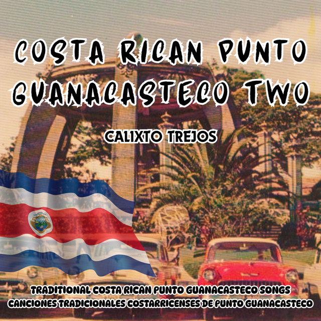
Punto Guanacasteco
Tradicional Costa-Riquenha
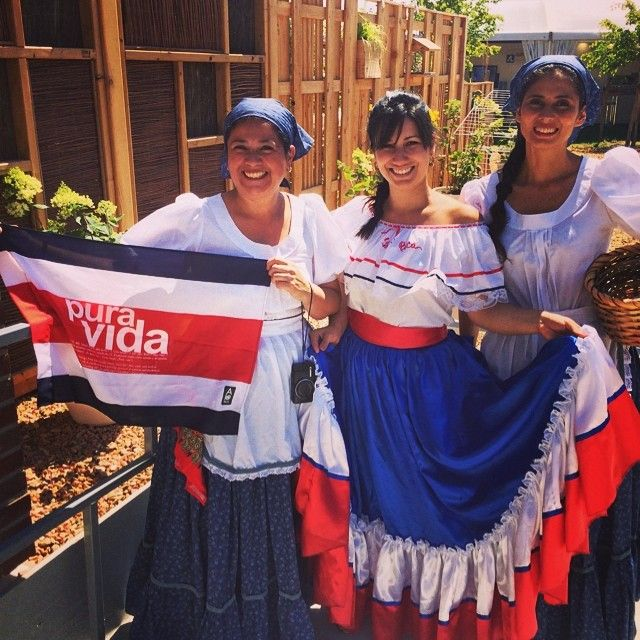
Ticas Lindas
Tradicional Costa-Riquenha
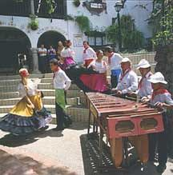
Caballito Nicoyano
Tradicional Costa-Riquenha
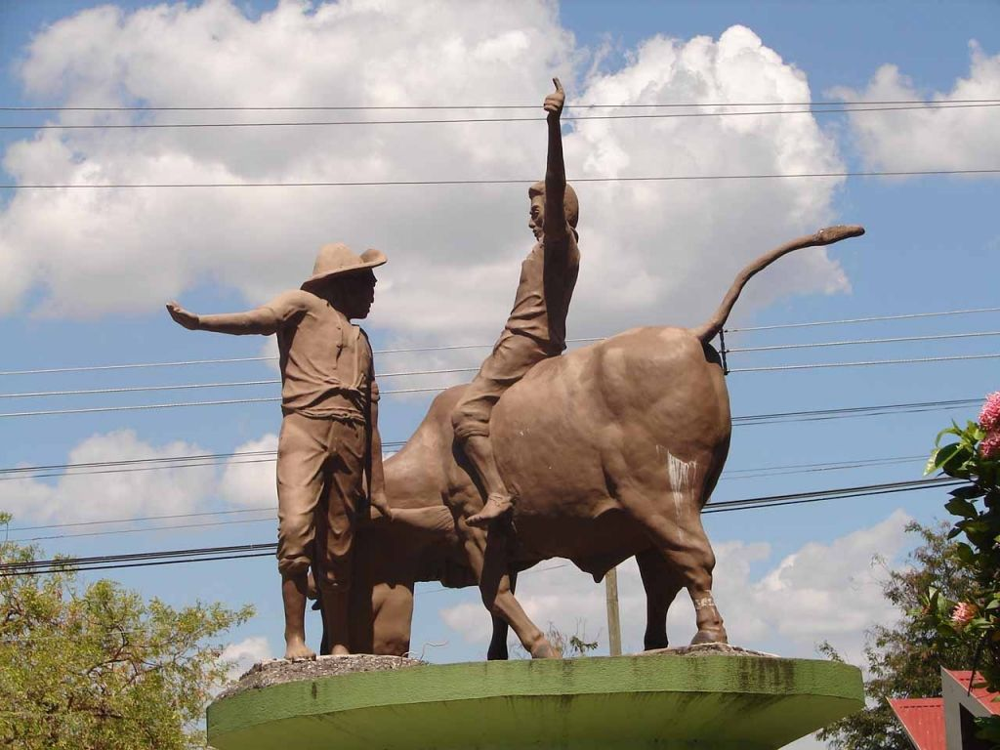
El Torito
Tradicional Costa-Riquenha
Músicas populares
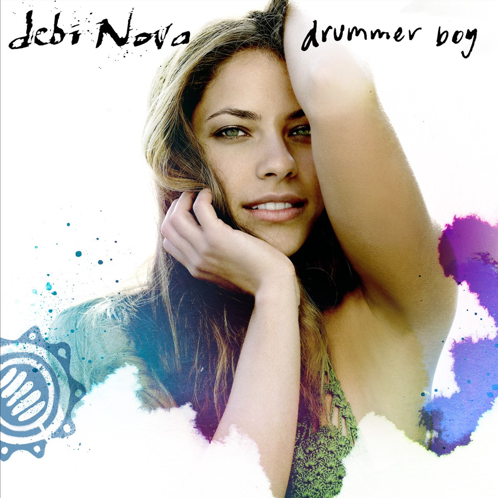
Drummer Boy
Debi Nova
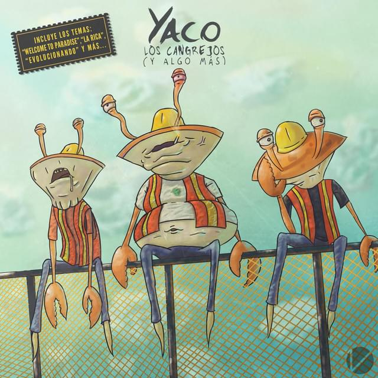
Welcome to Paradise
Yaco
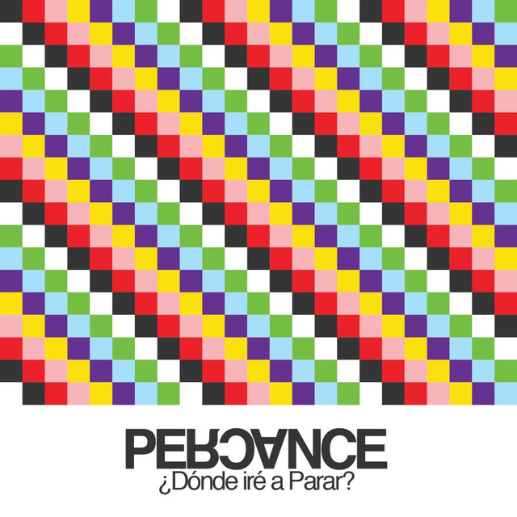
Gira el Mundo
Percane
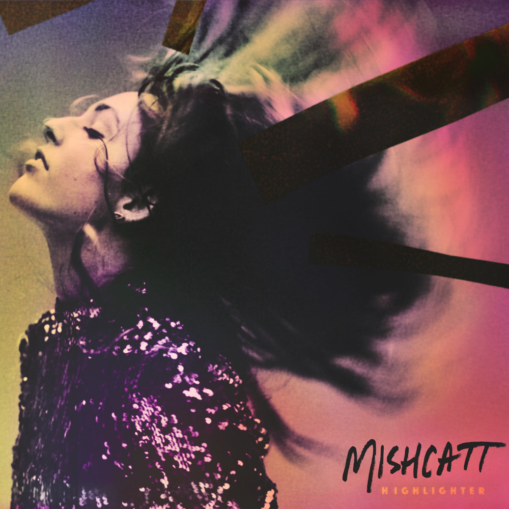
Gun to The Head
Mishcatt
Ritmos
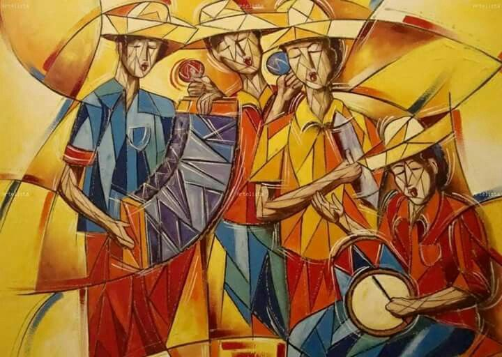
1. Punto Guanacasteco
O ritmo folclórico mais tradicional da Costa Rica. Originário de Guanacaste, é marcado pelo som da marimba e acompanha a dança de mesmo nome em festas, celebrações e apresentações culturais.
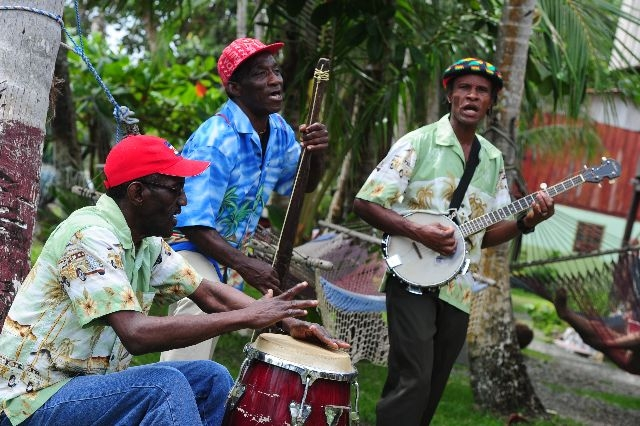
2. Calipso Limonense
Nascido na província caribenha de Limón, mistura influências afro-caribenhas com ritmos alegres e envolventes. Suas letras retratam o cotidiano, a natureza e a cultura da costa atlântica.
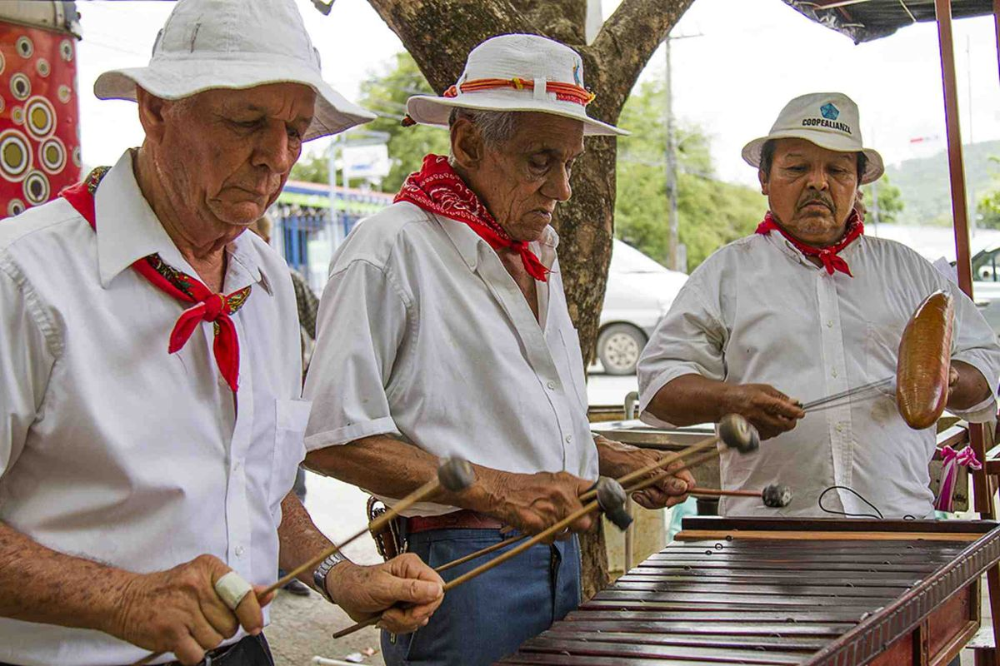
3. Tambito
Um ritmo tradicional de Guanacaste que combina influências indígenas e espanholas. Com melodias leves e animadas, é frequentemente executado por grupos folclóricos durante festivais e eventos culturais.
Danças
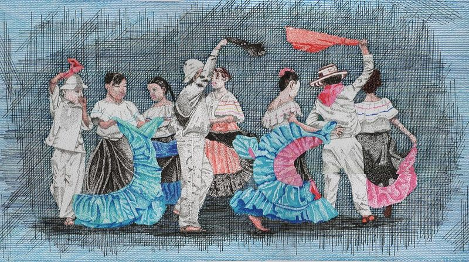
1. Punto Guanacasteco
A dança folclórica mais emblemática da Costa Rica, originária da província de Guanacaste. Possuindo mesmo nome do ritmo musical, é dançada em pares ao som da marimba (instrumento musical), destacando vestidos coloridos, sapateados e movimentos elegantes que celebram a cultura tica.
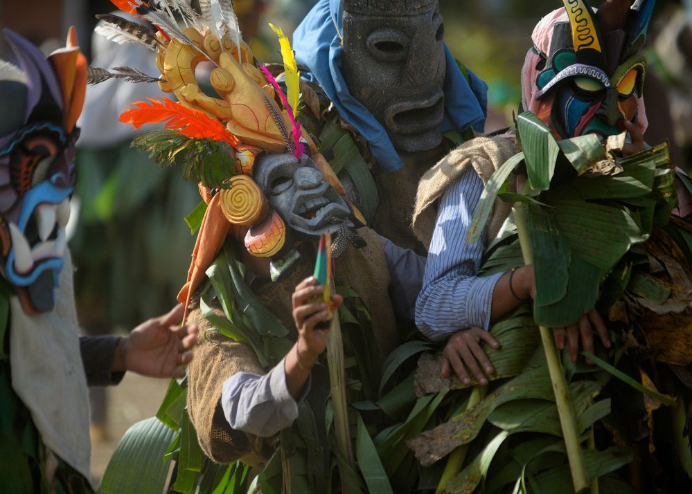
2. Baile de los Diablitos
Uma tradição do povo indígena Boruca que representa a resistência dos povos originários durante a colonização espanhola. Os participantes usam máscaras esculpidas à mão e encenam uma história preservada há séculos.
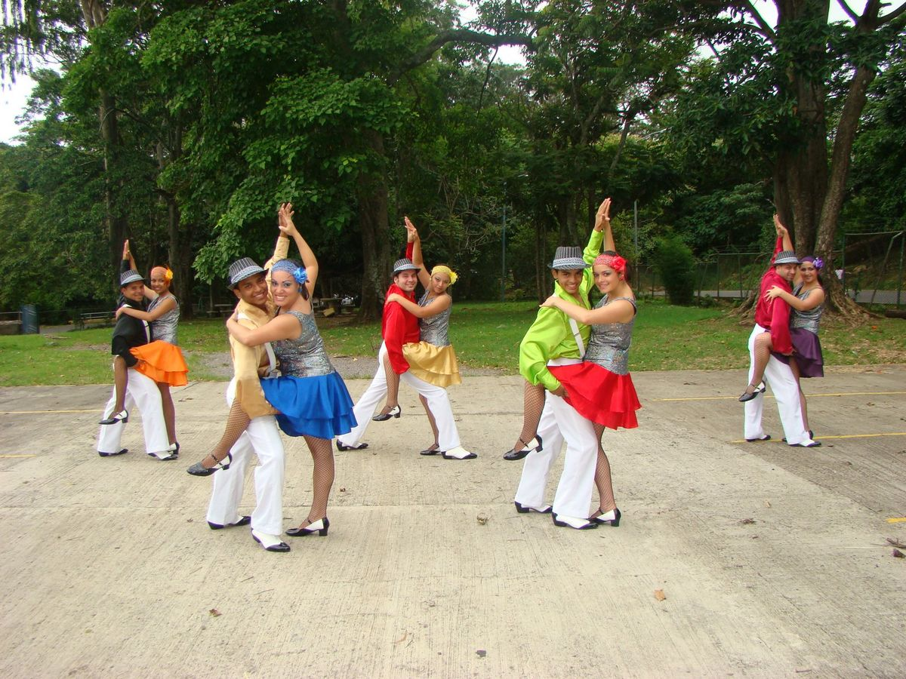
3. Swing Crioulo
O Swing Crioulo é uma dança típica da Costa Rica que surgiu em San José nas décadas de 1960 e 1970. Combinando influências do swing e da cumbia, destaca-se pelos movimentos rápidos, giros e muita energia. Hoje, é um importante símbolo da cultura costa-riquenha e foi reconhecido como Patrimônio Cultural Imaterial do país em 2021.